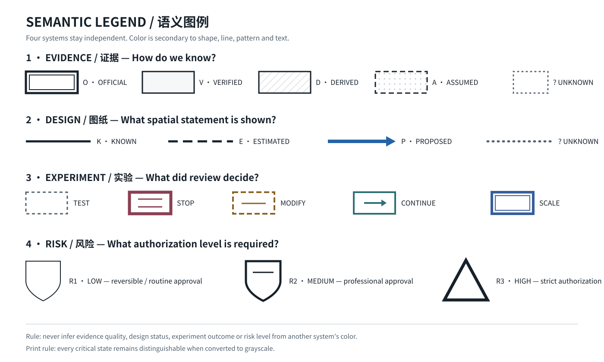

WINDOW 5 · PUBLIC SERVICE AESTHETIC
Open Node / 开放节点
视觉系统把“铁路双轨—站点—道岔—里程标”转译为能力流、公共接口、风险授权与年度城市版本，而不是复古铁路或赛博朋克 AI 图像。
Primary / 主标
Family A · Open Ring Switch
≥32 px / ≥4 mm
Family A · Open Ring Switch
≥32 px / ≥4 mm
Micro / 小尺寸
≤24 px；去除对角 switch，增加线重
≤24 px；去除对角 switch，增加线重
Version device
Family C · milepost / archive secondary
Family C · milepost / archive secondary
FOUR INDEPENDENT SEMANTICS
状态不是一套红黄绿
O · OFFICIAL
官方来源 V · VERIFIED
交叉核验 D · DERIVED
推导/计算 A · ASSUMED
设计假设 ? · UNKNOWN
未知
官方来源 V · VERIFIED
交叉核验 D · DERIVED
推导/计算 A · ASSUMED
设计假设 ? · UNKNOWN
未知
TESTSTOPMODIFYCONTINUESCALE
证据、图纸、实验结论、风险等级必须同时带文字/代码/线型或形状；颜色只作辅助。
MAP LANGUAGE
Known / Estimated / Proposed / Unknown
规则
现状/锁定信息保持稳定；设计提议清楚但不冒充 official；Unknown 必须可见。
现状/锁定信息保持稳定；设计提议清楚但不冒充 official；Unknown 必须可见。
Capability Backbone 使用更高层级线宽，但不覆盖现状约束与证据标签。
ANNUAL CITY VERSION RELEASE
版本号是公共问责标签，不是软件噱头
JING-ZHANG CITY v2027
V27·014
Capability change: MODIFY → CONTINUE
Evidence: D / Derived · Risk: R2
Release note + archive link required
Capability change: MODIFY → CONTINUE
Evidence: D / Derived · Risk: R2
Release note + archive link required
COMPLETE LEGEND
完整语义图例

该图例在灰度转换后仍以双边框、实线/虚线/点线、纹理、箭头、盾牌/三角形和文字保持差异。